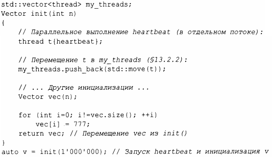

⇐5.2.2 Перемещение контейнеров Содержание 5.4 Обычные операции⇒
Определяя конструкторы, операции копирования, перемещения и деструктор, программист может обеспечить полный контроль над временем жизни содержащегося в объекте ресурса (такого, как элементы контейнера). Кроме того, перемещающий конструктор позволяет объекту легко и дешево перемещаться из одной области видимости в другую. Таким образом, объекты, которые мы не можем или не хотим копировать из области видимости, могут быть просто и дешево перемещены из нее. Рассмотрим класс thread стандартной библиотеки, используемый для представления параллельных вычислений (§ 15.2), и вектор из миллиона douЫe. Мы не можем копировать первый объект и не хотим копировать последний.
Во многих случаях дескрипторы ресурсов, такие как Vector и thread, являются превосходными альтернативами непосредственному использованию встроенных указателей. Фактически интеллектуальные указатели стандартной библиотеки, такие как unique _ptr, тоже являются дескрипторами ресурсов(§ 13.2.1 ).
Я использовал vector стандартной библиотеки для хранения потоков thread, потому что мы не можем параметризовать наш простой Vector типом элементов (до §6.2).
Во многом так же, как new и delete исчезают из кода приложения, мы можем заставить исчезнуть в дескрипторах ресурсов указатели. В обоих случаях результат представляет собой более простой и удобный в обслуживании код без дополнительных накладных расходов. В частности, мы можем добиться строгой безопасности ресурсов, т.е. устранить утечки ресурсов для общего понятия ресурса. Примерами являются объекты vector, хранящие память, thread, хранящие системные потоки, и fstream, хранящие файлы.
Во многих языках управление ресурсами в основном делегируется сборщику мусора. С++ также предлагает интерфейс сборки мусора, так что вы можете подключить сборщик мусора. Однако лично я считаю сборку мусора последним вариантом - после исчерпания более ясных, более общих и лучше локализованных альтернатив управления ресурсами. Мой идеал заключается в том, чтобы не создавать мусор, тем самым устраняя необходимость в сборщике мусора: не мусори!
Сборка мусора фундаментально представляет собой глобальную схему управления памятью. Умные реализации могут компенсировать эту глобальность, но по мере того, как системы становятся все более и более распределенными (вспомните о кешах, многоядерности и кластерах), локальность становится важнее, чем когда-либо ранее.
Кроме того, память не является единственным ресурсом. Ресурс - это все, что должно быть захвачено и (явно или неявно) освобождено после использования. Примерами ресурсов являются память, блокировки, сокеты, дескрипторы файлов и потоков. Нет никакого сюрприза в том, что ресурс, который является не просто памятью, называется ресурсом, не являющимся памятью (non-memory resource). Хорошая система управления ресурсами обрабатывает все разновидности ресурсов. Утечек следует избегать в любой системе, работающей длительное время, но чрезмерное удержание ресурсов может быть почти таким же плохим, как и утечка. Например, если система удерживает память, блокировки, файлы и тому подобное в два раза дольше, чем требуется, - потенциально такой системе требуется вдвое большее количество ресурсов.
Прежде чем прибегать к сборке мусора, систематически используйте дескрипторы ресурсов: пусть каждый ресурс имеет владельца в некоторой области видимости и по умолчанию освобождается в конце области видимости его владельца. В С++ это называется идиомой RAII (Resource Acquisition ls lnitialization - захват ресурса есть инициализация) и интегрируется с обработкой ошибок в форме исключений. Ресурсы могут перемещаться из одной области видимости в другую с помощью семантики перемещения или "интеллектуальных указателей", а совместное владение может быть представлено "совместно используемым указателем" ( § 13 .2.1 ).
В стандартной библиотеке С++ идиома RAll очень распространена для разных видов ресурсов, например для памяти (string, vector, map, unordered _ map и т.д.), файлов (ifstream, ofstream и т.д.), потоков выполнения (thread), блокировок (lock_guard, unique_lock и т.д.) и объектов общего назначения (через unique _ptr и shared _ptr). Результатом является неявное управление ресурсами, невидимое при обычном использовании и приводящее к малой продолжительности захвата ресурсов.